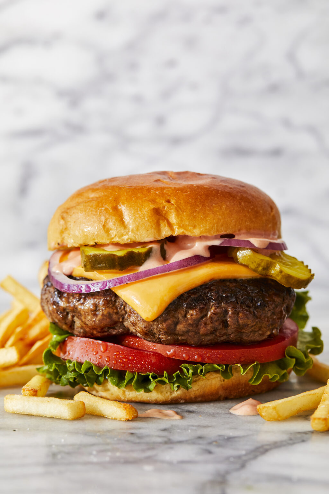

Description
Homemade cheeseburgers. An absolute summertime staple.
And it doesn’t require anything fancy. Just some good ole’ 80/20 ground chuck,
salt and pepper (seasoning is absolute key here) and the most epic burger sauce
to take your burger to the next level.
Serve with desired toppings (all the bread and butter pickles for me)
on toasted brioche hamburger buns. And don’t forget to snag some good
quality American cheese (or your favorite kind of cheese if American
cheddar isn’t your thing).
Ingredients
3 tablespoons dill pickle relish
1 tablespoon Dijon mustard
2 pounds ground beef, 80/20
Kosher salth and freshly ground black pepper, to taste
Per serving
Steps
BURGER SAUCE:In a small bowl, whisk together mayonnaise, ketchup, dill pickle relish and Dijon; set aside.
In a large bowl, combine beef, 1 1/2 teaspoons salt and 1 1/2 teaspoons pepper. Using a wooden spoon or clean hands,
stir until well combined. Gently form into 6 1-inch-thick patties, about the size of the hamburger buns.
Heat canola oil in a large cast iron skillet over medium high heat.
Add patties and cook until lightly charred or until desired doneness,
about 3-5 minutes per side; top with cheese.
Serve immediately in hamburger buns with BURGER SAUCE and desired toppings
Reference